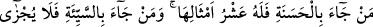
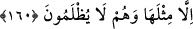

İYİLİĞİN VE KÖTÜLÜĞÜN KARŞILIĞI
160. Kim (Allah huzuruna) iyilikle gelirse ona getirdiğinin on katı vardır. Kim de
kötülükle gelirse o sadece getirdiğinin dengiyle cezalandırılır. Onlar haksızlığa
uğratılmazlar.
“Kim bir iyilik getirirse ona o (getirdiği) nin on katı vardır.” Kıyamet gününde
Allah’ın lütf u keremiyle mü’min, yaptığı her iyiliğe karşılık, getirdiğinin on katı ile
mükâfatlandırılacaktır. Çünkü îmanı olmayanın sevabı da yoktur. Burada bire on olarak
verileceği va‘dedilen sevab, îman etmeyenlerden sadır olan faydalı işler için geçerli
değildir.
Kadı Iyaz der ki: Kâfirlerin yaptıkları iyi işlerin ahirette kendilerine fayda
vermeyeceği, bunlardan ötürü onların nimetlerle mükâfâtlandırılmayacağı ve
azablarının hafifletilmeyeceği konusunda İslâm âlimleri görüş birliğindedir (icma).
Ancak işledikleri cürümlere göre bazılarının azabı, diğerlerine nazaran daha şiddetli
olacaktır.
Bununla birlikte îman ettikleri takdirde önceden yapmış oldukları hayırlı işleri, sevab
hanelerine yazılacaktır. Bir hadiste şöyle buyurulmuştur: “Kâfirlerin (küfür zamanında)
yaptıkları iyilikler, müslüman olduktan sonra makbul olur.”[192]
Kâşifi Tefsiri’nde şöyle denir: “Kim ki dünyâdan bir iyilikle gelirse...”
“Kim de bir kötülük getirirse, sadece onun dengiyle cezalandırılır.” Kötülüğü
yapan kim olursa olsun, bu hüküm değişmez. İlâhî va’din gereği olarak bire bir
mukabele edilecektir.
Bir saatlik küfrün cezası, en sert bir biçimde ebedî cehennem olarak tayin edilmiştir.
O zaman kötülüğün misli ile cezalandırılması nasıl izah edilebilir?” diye sorulursa,
buna şu cevabı veririz: Kâfir, ölmeyip de yaşasaydı ebediyyen küfür içinde kalma
azmindeydi. Bu sebeple, ebedî küfre azmedenin cezası da ebedî cehennem olur. Ancak
günahkâr mü’min böyle değildir. Çünkü o günahı devam ettirmeye değil, ondan
vazgeçmeye azmetmiştir. Bundan dolayı onun cezası sınırlı olacaktır.
“Onlar” sevapları azaltılarak ve cezaları arttırılarak “haksızlığa uğratılmazlar.”
Haddadî der ki: “Cenâb-ı Hakk’ın böyle buyurması, nimetleri lütuf olarak vermenin
câiz, baştan imtihan olunmadan ceza vermenin ise caiz olmadığı içindir.”
Bil ki bire on vermek, va‘dedilen kat kat mükâfatların en az olanıdır.
Sa’dî der ki: